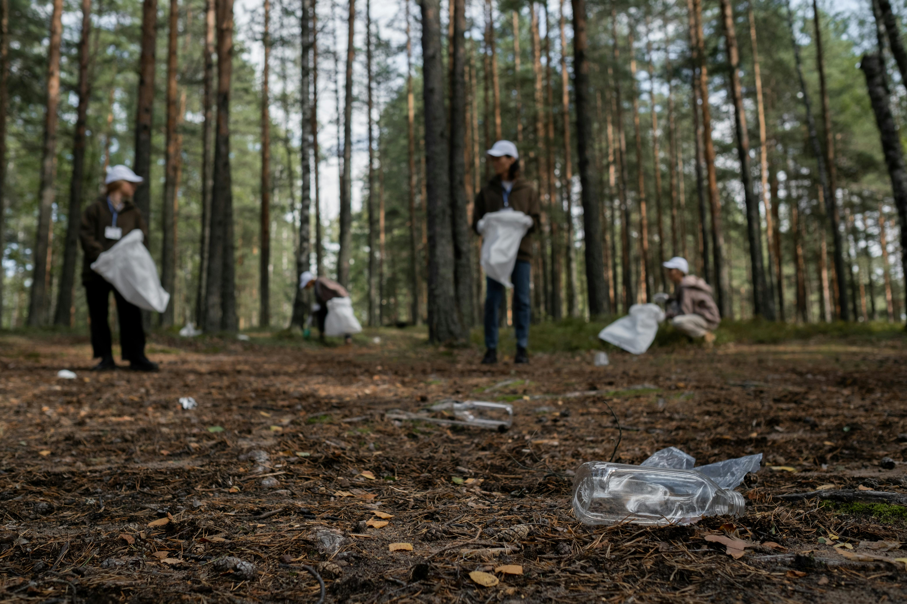
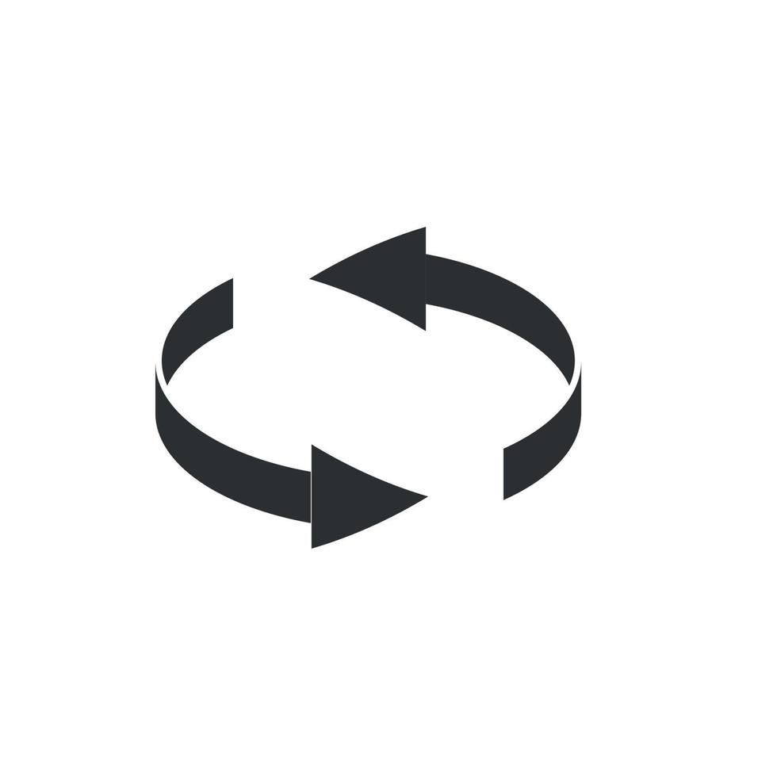
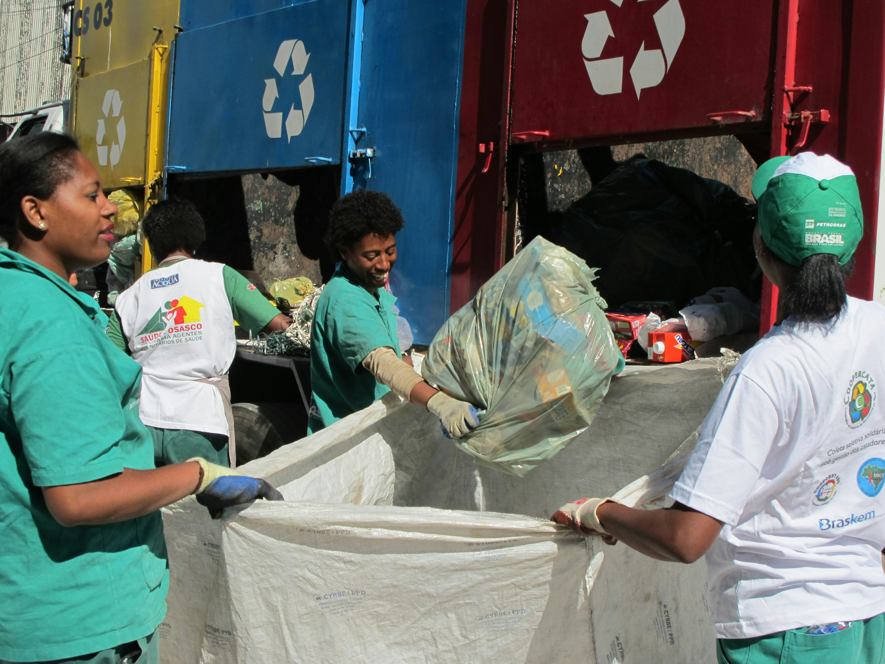

Por qué reciclar es importante
Reciclar ayuda a reducir la contaminación, ahorrar recursos naturales y proteger nuestro planeta. Con pequeños gestos diarios, cada uno puede hacer la diferencia.
Aprender cómo separar correctamente la basura contribuye a un mundo más sostenible.
Beneficios Sociales
 Fomenta la colaboración comunitaria, crea empleos verdes y fortalece la conciencia ambiental.
Beneficios Económicos
Reduce costos, impulsa la economía circular y genera oportunidades sostenibles.
Beneficios Ecológicos

Disminuye la contaminación, conserva recursos y protege los ecosistemas.
Datos interesantes
Reciclar una lata de aluminio ahorra suficiente energía para encender una televisión durante 3 horas.
El vidrio puede reciclarse infinitas veces sin perder calidad.
Una tonelada de papel reciclado ahorra alrededor de 17 árboles.
Separar correctamente los residuos reduce significativamente la contaminación del suelo y agua.
Las bolsas de plástico pueden tardar hasta 1000 años en degradarse en el medio ambiente.